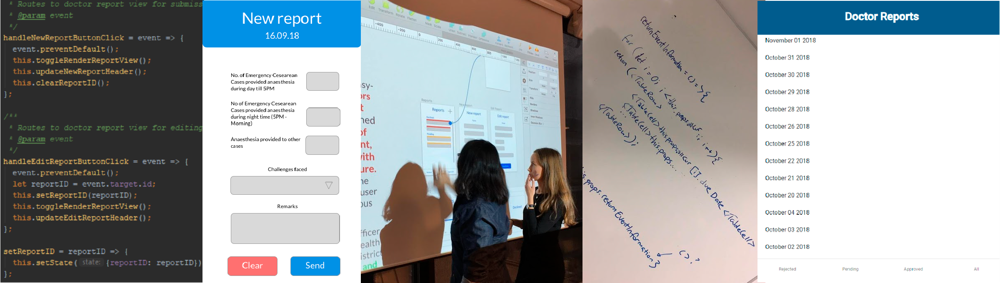

App i React
Høst 2018 avholdt jeg faget IN5320 – Development in Platform Ecosystems. Prosjektet vårt "Doctors diary", gikk ut på å lage en applikasjon for å sende rapporter mellom en District Health Officer (DHO) og en doktor i de forskjellige distriktene.
Basert på en kravspec og behov laget vi en applikasjon som kobles opp mot platformen til DHIS2 gjennom deres web API. Ved bruk av teknologier som React, html og css skapte vi et grenesnitt for doktorer og helseministre for å rapportere og se på rapporter. Vi brukte sketch for å skissere og komponenter fra Material UI til å skape et oversiktlig grensesnitt.
DDette kurset handlet mer om å fullføre en teknisk kravspesifikasjon og implementering av funksjoner enn å iterere på design med fokus på grensesnitt. Av den grunn ble det lagd enkle funksjonelle prototyper uten fokus på brukerinvolvering. Vi hadde derimot heller ikke sluttbrukerne av applikasjonen tilgjengelige for dette kurset, så resultatet ble en blanding av krav og genius design.